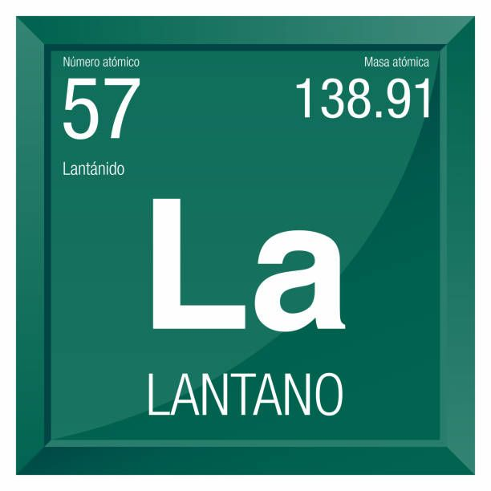

Lantano
El Lantano es un elemento químico de la tabla periódica con símbolo químico La y número atómico 57 con un peso atómico de 138.905 u y está clasificado como lantánidos y forma parte del grupo 3 (familia del escandio). El Lantano es sólido a temperatura ambiente.
Para que sirve
-
El lantano se utiliza en la fabricación de vidrios ópticos especiales, mejorando su claridad y resistencia. Es fundamental en cámaras y telescopios de alta precisión.
-
El lantano se añade a aleaciones de níquel-hidruro metálico, utilizadas en baterías recargables, mejorando su eficiencia y vida útil.
Tabla Periodica.
